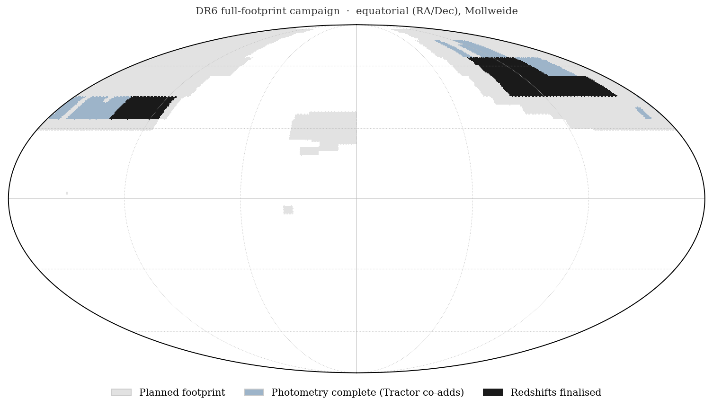

UNIONS position sample
Progress of the DR6 full-footprint catalogue campaign — forced photometry and redshifts.
Snapshot generated 2026-07-03 18:28 CEST (Paris) · 12:28 EDT (Waterloo) · live disk state, preliminary.
Sky coverage

Completed photometry
Tractor forced-photometry / co-adds — cells with a .ok.
| Wave | Photometry finished | of planned | Fully-complete sub-regions | Redshifts finalised |
|---|---|---|---|---|
| Wave 1 (ranks 0–9) | 996 deg² | 10 (90%) | 8 = 895 deg² (r000, r001, r002, r003, r004, r005, r006, r007) | 7 = 786 deg² (r000, r001, r002, r003, r004, r005, r007) |
| Wave 2 (ranks 10–29) | 378 deg² | 20 (17%) | 1 = 114 deg² (r010) | 1 = 114 deg² (r010) |
| Combined | ~1,374 deg² | 64 | 9 = 1,008 deg² | 8 = 900 deg² |
The area in each row is cell-weighted — the actual
sky area whose photometry is done (summing each sub-region's area ×
fraction of its cells extracted), so it counts partially-done sub-regions too.
The fully-complete column is the stricter set where all cells are done
(those are the ones eligible to finalise into combine_full.parquet);
redshifts finalised is the subset already delivered as z_est.
- Cells: wave 1 at 143/160, wave 2 at 53/112.
- Finalised redshifts: 9 sub-regions,
1,008 deg², 1,646,348 galaxies delivered into
combine_full.parquet.
Per-sub-region detail
| Sub-region | Area | Cells | Photometry | Redshifts | spec-z |
|---|---|---|---|---|---|
| r000 | 108 deg² | 16/16 | complete | finalised | ✓ |
| r001 | 108 deg² | 16/16 | complete | finalised | ✓ |
| r002 | 114 deg² | 16/16 | complete | finalised | ✓ |
| r003 | 114 deg² | 16/16 | complete | finalised | ✓ |
| r004 | 114 deg² | 16/16 | complete | finalised | ✓ |
| r005 | 114 deg² | 16/16 | complete | finalised | ✓ |
| r006 | 108 deg² | 16/16 | complete | — | ✓ |
| r007 | 114 deg² | 16/16 | complete | finalised | ✓ |
| r008 | 108 deg² | 4/16 | 25% | — | ✓ |
| r009 | 108 deg² | 11/16 | 69% | — | ✓ |
| r010 | 114 deg² | 16/16 | complete | finalised | ✓ |
| r011 | 114 deg² | 15/16 | 94% | — | ✓ |
| r012 | 114 deg² | 12/16 | 75% | — | ✓ |
| r013 | 114 deg² | 8/16 | 50% | — | ✓ |
| r014 | 114 deg² | 2/16 | 12% | — | ✓ |